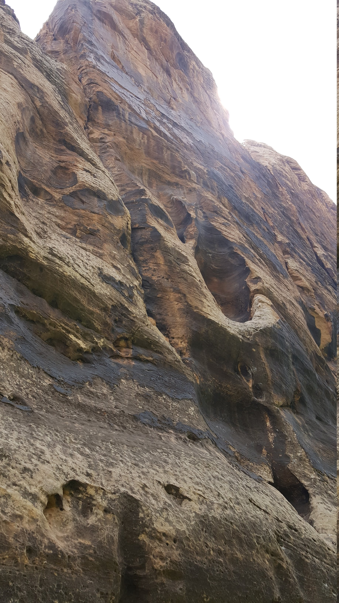
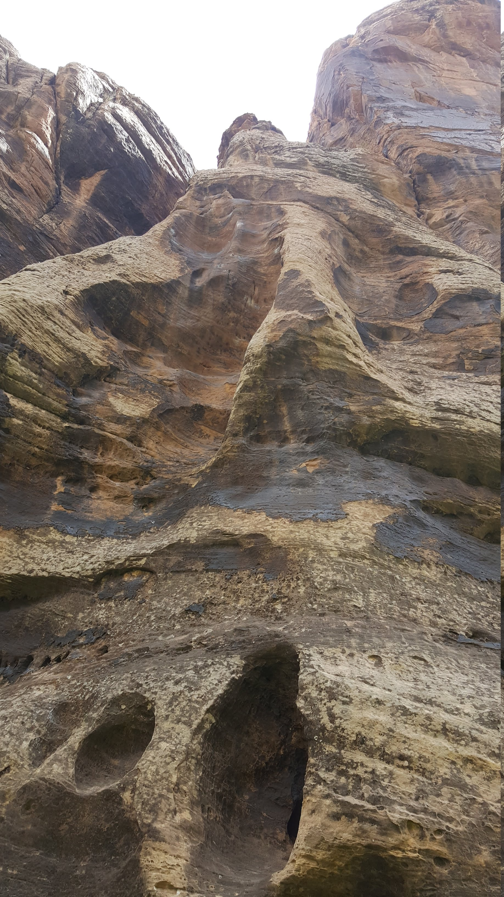
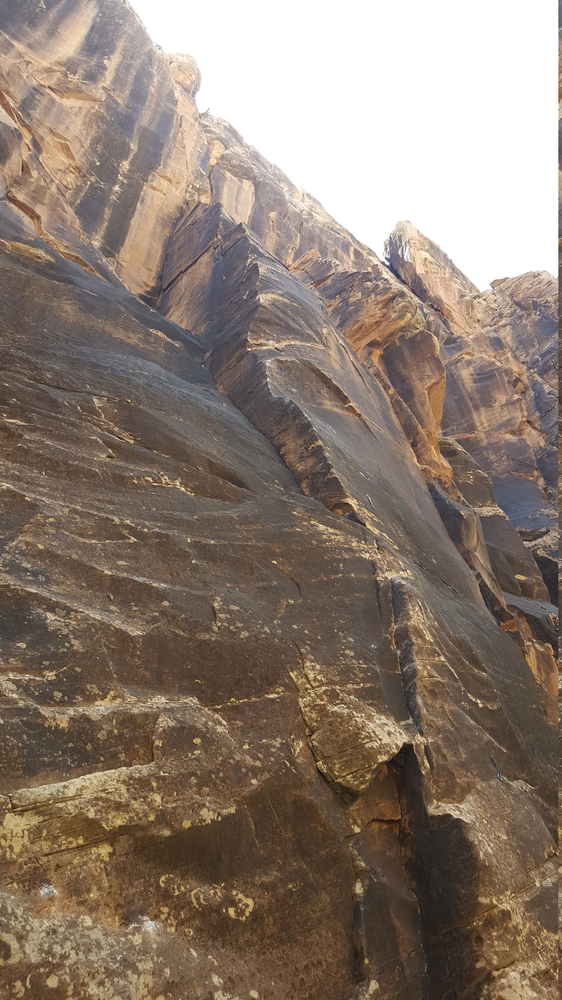
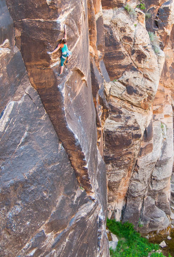

Abstract: I flew down to Arizona for a big computer science conference. The weekend before and after I climbed in Northern Arizona with some friends-of-friends and random people I met. I climbed at Winslow Wall (a cool flooded slot canyon with varnished black sandstone reminiscent of Red Rocks), Priest Draw (a limestone bouldering area world famous for its pockets and burley climbing on horizontal roofs), and Paradise Forks (a very traditional and scenic basalt crack climbing area full of technical stemming and jamming, also popular for highlining).


Introduction
While academia can be demanding, it can also present unique opportunities for travel. I once met a Slovenian mechanical engineering professor traveling to The States for a conference. He was strong and psyched, and we had a blast climbing in the Red River Gorge. After meeting him, I knew I wanted to link work and climbing trips whenever possible.
The biggest conference in my field is called Economics and Computation, EC. The EC community studies computation problems where incentives come into play, covering diverse topics from voting theory to auction design and interesting applications from K-12 school choice to resident-hospital matching. It's held every summer and this year the venue was Phoenix, Arizona. I could describe what Phoenix is like in June, but I think I'll let the Hill Family help me out here. Link.
"Surface of the sun" notwithstanding, by driving two hours north of Phoenix you gain 5000 feet of elevation and enter into an entirely different ecosystem. The afternoon of Friday, June 21st, I did exactly that. It was incredibly satisfying watching the temperature display on my rental car slowly dip from 110 to 75 as the land around me shifted from cactus-spotted desert to grassy plain to dense ponderosa pine forest. I’d entered the coconino national forest, a varied landscape surrounding the city of Flagstaff, my “climbing base” for the trip.
My camping spot for the night was Priest Draw, an incredible limestone bouldering area you’ll hear about later. I got in with just enough light left to explore one boulder. I found out later that this boulder is called the “the brain”, which is an apt name for it’s huge wiggley ridges. Within those ridges are the most hilariously large jugs I’d ever seen, which made for perfect and chill circuits to solo around for a few minutes before it started to get dark.
Day 1: Winslow Wall Sunday, June 23
Saturday morning I headed to Flagstaff to meet up with a friend-of-a-friend named Jackson. Jackson was stoked to show me Winslow wall, which he thought was one of the real gems of the Flagstaff area. Winslow, Arizona (such a fine sight to see) is a very small town an hour east of Flagstaff. That short drive brings you out of the mountains and forest and back into arid grassy plains. However, Jackson assured me as we bumped along backroads surrounded by a completely flat landscape, we really were headed to an awesome crag with 100 foot tall routes.
As we pulled into the parking lot, Jackson announced “Wow there are some many cars! I've never seen it this packed”. Want to guess how many cars there were? Three. This highlights my first piece of evidence that Flagstaff is an incredible cragging city: the complete lack of crowds.
Winslow wall is a narrow sandstone canyon carved out by East Clear Creek. The approach involves a bit of fourth class scrambling and a fixed rappel. Once you touch down on the canyon floor, you feel like you've entered another world. Bizarre rock formations line the walls, sandy beaches frame the creek, and lime green algae gently bobs along in the creek. I waded shoeless through the water feeling like a kid in a candy store: the routes looked incredible!

Route Breakdown:
- 5.11b Melva and 5.11c Aqua-Velva. These routes both tackled incredible
“scoop” features carved out of the wall. Both involved some technical
stemming, a climbing move defined by pressing outward
against the inside faces of the scoops. The stem moves variously left me
doing the splits or doing a dip with nothing but my hands on the rock or
even full body stemming, with both hands on one side of a
scoop and both feet on another.
 
-
5.12b Slap My Fro. Climbing magazine liked this arete enough to call it
one of the
100 best sport climbs in America. Now I’m not sure if it quite stacks up
against, you know, a randomly chosen semi-popular route in the Red River
Gorge, but it was definitely the highlight of my day! I tried to onsight,
flailed, did the cruxes a couple times each while hanging around, then I sent!
Stoke was high.
Some thin moves in the start bring you to the corner rest in the bottom of the picture. Next some mellow but very cool arete laybacking brings you to the back-to-back cruxes at about two thirds hight, where the angle kicks back. The first crux requires flipping a hold to an undercling off bad feet, and keeping enough tension to readjust and make a big reach. Jackson gave me very helpful beta here. I did the second crux in a very unique way: a dyno-to-mantle! Your right hand is on a big slopey ledge for this move, and you left hand has some high opposition, so I simply jumped my weight on top of my right hand.
Second photo below (not mine — shot by some guy Damon Vaughan) shows the first crux really well. Check out the mountain project for more awesome shots!
  - 5.11c The Winsloner. More thin crimping! This felt like a bit of a
journey, as you weave back and forth following the bolts and the holds.
There was a very cool “upward press” move under the mini-roof which felt
like a competition problem. I had to press upward on nothing to maintain
balance and walk my feet up.
I REALLY want to come back for the sweet splitter offwidth to the right of
this climb. Offwidths are cracks wider than a hand or a
fist which require shoving larger body parts into the crack and slowly
slithering up. I'm far from an offwidth aficionado, but they can sometimes
be really fun and often look super inspiring/intimidating.
-
5.10 Stick It. This ended up being the only crack we climbed at Winslow
Wall. Despite often feeling very comfortable on 5.10 crack climbing, this
climb felt very physical and hard to me. It was mostly wide hand jams and
fist jams, which felt very tiring. I resorted to a lot of back scumming,
stemming, and grunting. I think Jackson found this a little funny after
how much I'd been spraying about loving Indian Creek and 5.11 finger
cracks/offwidths.
He pointed out I'd recaptured a lot of the magic of starting out crack
climbing, though!

- 5.11d Has Bro. Another awesome arete, this one much more
“blunt”/rounded. I didn't get the send on this one —
I got super pumped actually fell out of a hand jam at the very top.
The arete climbing here was very different but equally fun. It felt very
sequential and there was a lot of switching from one side of the arete to
the other.
- 5.12c Atlas Shrugged. This route climbs up the steep, dark shield of rock
in the photo.
Another party had draws handing on this thin
crimping testpiece, so I got to try it without worrying about
hanging/leaving draws up! I wasn't even trying to send,
but it was cool to try the cruxes. Hopefully I'll come back some day (a
little less tired!).
Day 2: Priest Draw and The Anvil Boulders Sunday, June 23
Move N' Groove Barby at Priest Draw
Without a partner for Sunday, I headed back to my same camp sight at Priest Draw and promptly collapsed. I woke up exhausted — I'd climbed and crimped way too hard the day before. I had a very high gravity morning and was very slow to start. I needed some real easy climbs to coax the life back into me. Luckily, the highball v0s of the “Welcome Boulder” (picture above) were just the thing to remind me that I know how to rock climb.
Priest Draw is probably the most famous place I climbed in Arizona, and that's for a good reason. Dead horizontal roof climbing is a rare and very special thing. The geological conditions have to be just right for roof climbs — good holds at any other angle are completely unusable on roofs. Also, when big enough holds do form on roofs, they are often too fragile to stay on for long. Priest draw remedies this problem with pockets — its horizontal roofs are littered with huge solid juggy holes to stuff your hands into. For a fantastic video series showcasing roof climbing around Flagstaff, see Rooftown (volumes One, Two, and Three) directed by Nathaniel Davison and staring the hyper-crusher Matt Gentile. Volume Two also features canyons similar to Winslow Wall (although I'm not sure where exactly they are).
Eventually I made my way into the boulder field proper. I found a crew of strong Phoenix folks working on a problem in my grade range: Move 'N Groove Barby (v7). Luckily they were very friendly and showed me the dark arts of limestone roof climbing.
The route climbs a very faint spine-like feature out a not-quite-horizontal roof. The holds are mostly on the sides of the spine, and a lot of them are huge jug pockets. Some of these pockets are used as toe cams, which you use by inserting your foot sideways then twisting to stick it in the pocket. These toe cams were so locker there was no chance of them blowing out — after you set them you could really yard on 'em hard without worry. The toe cams lead you to two slopey holds which you need to compress between. Then I finished the route up with a core-intensive high heel hook and slapped right hand to the jugs over the top. Thankfully there's not a crimp or a small pocket on the whole route: nothing but juggy or slopey holds and powerful moves.
This video is pretty similar to the beta I used for this climb. I was proud to figure out a variation to the top moves for myself: going up with your right hand to the lip of the boulder keeps you way more balanced and prevents your feet from cutting. That topout beta was the last piece of the puzzle: combined with the Phoenix crew's excellent advice, it allowed me to send after a couple hours of work. I really wish I had a video of myself (#picsordidnthappen) because it's very hard to tell what's going on from a picture. But anyway, here's my (probably indecipherable) notes from my climbing journal.
A couple people from the Phoenix crew sent Move 'N Groove (or its neighbor, called Disco Polly) right around the same time I did. They had to head out after that, so I thanked them for their awesome hospitality and went on my way.
Exploring at the Anvil Boulders
My morning at the Draw was awesome from an “athletic” point of view. But I still wanted to do a little exploring before my conference started. I drove down through Sedona, Arizona — a popular tourist destination which looks like it's really good for rock climbing. There tons of exposed rock everywhere! However, from what I've heard it's mostly very loose, and the approaches are pretty grueling. Instead of the long trad climbs, I had my eye set on the Anvil Boulders, a small cluster just outside town.
What I found was actually crazy impressive. The Anvils were a super dense cluster of huge and bullet-hard sandstone boulders, reminiscent in style and quality of Joe's Valley in Utah. I soloed around on a few v0-looking climbs whose names I couldn't find, and marveled at the beautiful crystal and plated and pocketed rock features. The awesome-looking hard climbs are just one of the many reasons I'll have to make it back to Arizona some day.
There was one moderate I really wanted to try: Lazer Cut (v4). I was lucky enough to find a party working it! They were the only other people in the boulder field, and were happy to let me join them for a few minutes. The boulder was awesome fun, and I managed to get this sweet beta slideshow from one of the guy's laps.

Interlude: Economics and Computation
After the Anvil boulders, I drove down to Phoenix, returned my rental car, and settled into my AirBnb for the week. The conference was very interesting, and it was great to meet different people in my field and hear what interested them.
I was exhausted after a week of the conference, but for some reason, I thought I should set up a trip back to Winslow Wall for Saturday which would require me to wake up at 4am, get another rental car, then drive 3 hours. Thankfully, those plans got cancelled, and I got to sleep in before heading back to Priest Draw for another day of bouldering.
As far as “getting sendy” goes, my second weekend was a little less successful than the first. A Priest Draw, I tried something very very hard for me, and at Paradise Forks, I thought exploring and mileage were a little more important. But it was still a stellar weekend!
Day 3: Priest Draw Saturday, June 29
My second day in Priest Draw was actually pretty similar to the first. Slow to start, but finally got rolling pretty hard. I started on the Welcome Boulder again, then looked around to see which climbs people were working on. I did a few moderates with different crews, including The Fin (v1) and The Bat Cave (v3). The latter problem was spectacular: enormous jugs on a dead horizontal roof, complete with heel hooks, toe cams, and a bat-hang (hanging by just your toes) for the finish.
Eventually, I realized I should probably climb with the group of two dudes from Albuquerque (both incidentally pictured above) who were sitting around chilling at The Bat Roof. They were waiting for the sun to go down and things to get cooler to try Carnivore Direct, v9. While I'd never done a v9, I was really psyched to try!
Anyway, I didn't send. But here's a mega edited video of me doing the moves #fake #picsanddidnthappen.
Day 4: Paradise Forks Sunday, June 30
Sunday morning, I met up with Alex, a different friend-of-a-friend who live is Flagstaff. We were planning to climb at Paradise Forks, a basalt crack climbing area. We'd mostly be trad climbing (placing out own pieces of protection as we went, as opposed to sport climbing, where there are bolts pre-placed for protection). I'd never climbed on basalt before, so I was eager to check it out.
Alex works at a bar, so he needed to get a somewhat late start. That was fine by me after I'd climbed myself half to death the weekend before. We rolled out around 11, and after the 40 minute drive, quickly got to the top of the cliffs. At this area, you approach from the top, so you have to rappel in and then climb back out. We set up a single rappel station for the day.
Route breakdown:
- 5.9 Pillow Talk. Sinker hand jams! After getting worked on a hand crack the weekend before, it was comforting that this route wasn't much trouble. There's a few nice hand cracks in the picture below, but Pillow Talk is the prominent splitter (i.e. a crack through a level face — not in a corner) on the farthest jutting-out section of rock.
-
5.11+ Davidson Dihedral. This ended up being my hardest crack climb in
Northern Arizona. It's immediately to the left of Pillow Talk, so I set a
single anchor we could use for both climbs. I started with a lap on toprope.
I tried the moves and worked the gear placements,
and memorized as much as possible. Alex took a run on toprope while I
nervously tried to run though the hard sections and the trickiest
placements.
The route starts with a few technical face moves, then a long series of strenuous but straightforward finger locks. The crux for me was a long reach off of a very interesting undercling jam/downpulling crimp hold. The reach bypasses a crazy thin section and gets you to a good finger lock. Moving feet up below and then through the thin section is a little trick as well, but then you're home free, with great locks, hand jams, and secure trad placements to the top. I was stoked to successfully send!
-
5.11a The Prow. The climb features one of my most dreaded crack sizes:
finger stacks (aka ring locks). When a crack is too wide
for fingers, but too small for hands, you have no choice but to ring lock
(well, you could go climb something else... but I digress). The basic
strategy is to lay your thumb along one side of the crack, then
fingers over your thumb to make them wide enough. Yep. Good luck making that
work.
Despite my fear of ring locks, I managed to send without too much fuss. Lots of stemming and face climbing was involved. The position on the route was really rad — it's right at the nape of the “fork” which paradise forks is named after. Photo by JMo from Mountain Project.
-
5.12b Americans at Arapiles. When I said The Prow was at the exact name of
the “fork” of the forks, I lied. This sport climb, just
to the right of The Prow, is the true “prow” of the Forks.
It's very existence is controversial, as The Forks is mostly a trad climbing
area. But I've already put a length discussion of climbing ethics in one
sidebar, so I won't get into all that today. I'll say this — I thought
this climb was super rad.
Like before, I made one anchor which I could use to belay Alex up the prow and which I could use to try Americans at Arapiles. The climb starts at a ledge halfway up the cliff so that was actually one of the easiest ways to get to it. I DID NOT feel confident standing at the base — the crux move at the second bolt (more arete laybacking!) is super hard and super technical, and I could only barely sorta do it on toprope. After having a bit of trouble reaching the second bolt, I faced down the crux and managed to get really psyched and try really hard. Before I knew it I was staring down the third bolt! Amazing! It was a tricky, balancy clip, but I made it and leaned over to grab at the next holds. I made the next foot adjustment... and was promptly hanging from the rope! Yep, I blew it after the crux.
The rest of the climb was tricky, but I'd gotten it pretty much figured out on toprope, and I zipped right up it. I would've liked to send, but it would be really inconvenient to try again, and I was just psyched I'd gotten past the crux after feeling like it was impossible.
We were planning to do another route or two, but we got distracted by highlining (more on that later). That night, we sat around Alex's fire pit with a couple of his friends — a super chill night.
Day 5: Paradise Forks Monday, July 1
We were psyched enough on the forks to get right back at it! Alex had to head to work at 5pm, so again we kinda only got a half day. All the climbs we did were at the sunny Davidson Wall, so we racked up and got ready at the top of the climbs. Thus, I didn't ever bring my phone. Here a picture of the cliff from the other side of the ravine, though!
-
5.10 Queenfolia. This steep and exposed line really woke me up in the morning! The crux moves were pretty hard and pumpy, and all of your gear for the crux was behind a single massive but thin flake of rock. Super cool moves, though!
-
5.11c Three Turkeys. This route starts with some technical but easy corner climbing, then you run up a pumpy, jagged flake. You make a hard transition into a flared hand crack, and climb the crack using face holds. The flake transition went well, but the flared jams were really pumping me out, and the gear through in the back of the flare was small (though very good). I got very pumped and ended up wimping out and yelling take a few jams from the top. That was kind of a bummer — I probably should've gone for it.
-
5.10+ Torpedo. This route follows a pair of hand cracks and involved lots of stemming. Slightly uneventful, but very fun!
-
5.10+ Retard's Recess. Holy cow. I legitimately don't think I've even been closer to falling (and not!) than on this route. The climbing was easy up until a completely baffling crux roof. You got an undercling/hand jam with your right hand, but above that the crack pinches down to almost nothing. With your left hand you get a sloper, then a huge reach to a jug lip. Somehow I desperately full-body scummed across the wall below the sloper and worked a manky jam higher and higher in the crack. This gave me enough height to thrutch to the lip, not knowing how good of a hold was over the top. Thankfully it was a jug! It felt good to really go for it after wimping out on Three Turkeys. From there to the top was cruzer.
Highlining
One of the first things we saw when we got to the Forks was a highline stretching across the canyon. Highlining is slacklining, i.e. walking a thin stretchy piece of webbing, high up in the air (almost always harnessed into the line). I'd gotten into highlining slowly a couple years ago because a few of my friends really liked it. I was really stoked to try the line from the minute I saw it, but the riggers were nowhere in sight, so we went about our day of climbing. By the afternoon on Sunday, they highliners had returned, so we introduced ourselves and tried it out. We ended up each taking a couple sessions after climbing both days.
Highlining is a really special thing. Bobbing up and down and watching the shift between the foreground, midground, and background is really cool. You can do a lot of easy tricks and spins around the line. Just like climbing you can always keep pushing yourself to the next goal (walking father, doing a new trick, or establishing the next coolest line). In fact, highlining has a following almost as rad as climbing, and It was great to meet the awesome group of people that put that line up.
This highline was a good deal shorter than most I've been on before, and thus a lot easier. I managed to take 8 steps, way up from my old personal record of 2! Here's a (regrettably sideways) video showing what it's like to fall on a highline.